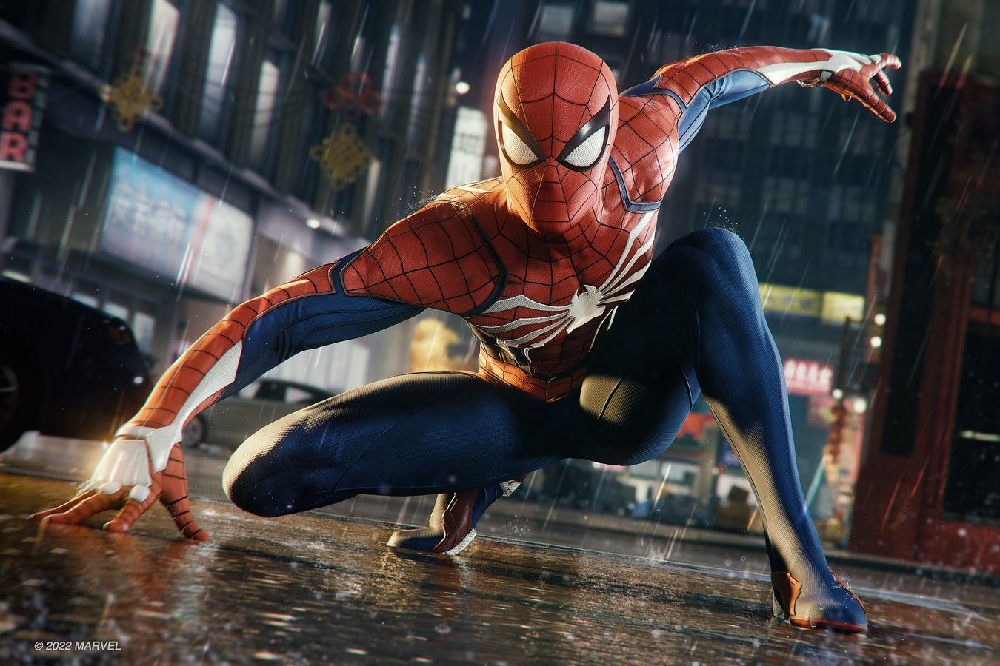

Мой любимый мульт персонаж - Человек-паук. Человек-паук, настоящее имя Питер Паркер — супергерой, появляющийся в комиксах издательства Marvel Comics, созданный Стэном Ли и Стивом Дитко. С момента своего первого появления на страницах комикса Amazing Fantasy № 15 он стал одним из самых популярных супергероев.
